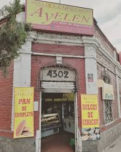
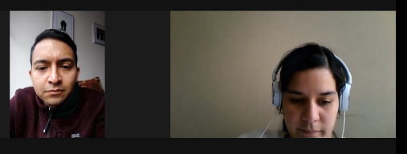
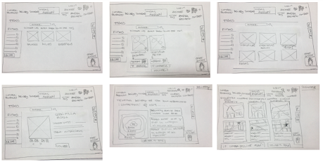

En un mundo donde la digitalización es clave para cualquier marca que desee mantenerse visible, nos encontramos con un gran número de empresas que aún no han podido llevar a cabo este paso fundamental de crecimiento. Dentro de esta realidad nos encontramos con Masas Ayelen, una empresa que forma parte de la Asociación de Emprendedores de Chile, ASECH, y quienes aún se encuentran un paso atrás en este proceso de desarrollo.
Se nos planteo el desafió de generar un diseño web para emprendedores cuya necesidad era potenciar su negocio a través de la tecnología, ademas entender cómo pasamos de lo que un cliente quiere alcanzar a la definición de un producto digital en poco tiempo era realmente el reto.

Se realizaron entrevistas a los usuarios de la empresas y los potenciales usuarios consumidores de estos productos para poder definir mejor los puntos de investigación.
Se realizó un análisis de competencia y se definieron user personas y journey map, para luego pasar a la fase de sintesis e ideación de los aprendizajes obtenidos en la investigación.

Ademas definimos los sketch para tener una base y pasarlo a prototipado de alta.
se definió la arquitectura de la información (flujo de contenido, mapa de sitio), y se hizo el diseño visual y de interacción (wireframes y prototipado), y user testing. Se obtuvo un diseño de una plataforma ecommerce de fácil uso, basado en las necesidades del cliente y de sus usuarios.